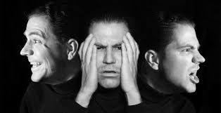

Transtorno del Estado de Animo
Que es el transtorno del Animo
Si tienes un trastorno del estado de ánimo, tu estado emocional o de ánimo general está distorsionado o no se condice con tus circunstancias e interfiere en tu capacidad para funcionar. Puedes estar extremadamente triste, vacío o irritable (deprimido), o puedes tener períodos de depresión alternados con excesiva felicidad (manía). Los trastornos de ansiedad también pueden afectar tu estado de ánimo y suelen ocurrir junto con la depresión. Los trastornos del estado de ánimo pueden aumentar el riesgo de cometer suicido.
Algunos ejemplos de trastornos del estado de ánimo comprenden los siguientes
• Trastorno depresivo mayor: períodos prolongados y persistentes de tristeza extrema • Trastorno bipolar: también denominado «depresión maníaca» o «trastorno afectivo bipolar»; se trata de una depresión que alterna entre momentos de depresión y manía • Trastorno afectivo estacional: forma de depresión que, muy a menudo, está relacionada con tener menos horas de luz solar en las latitudes que se encuentran más al norte y más al sur, desde fines de otoño hasta principios de la primavera • Trastorno ciclotímico: trastorno que provoca altibajos emocionales algo menos extremos que en el trastorno bipolar • Trastorno disfórico premenstrual: cambios en el estado de ánimo e irritabilidad que se producen durante la fase premenstrual del ciclo de la mujer y desaparecen con el comienzo de la menstruación • Trastorno depresivo persistente (distimia): forma de depresión a largo plazo (crónica) • Trastorno de desregulación disruptiva del estado de ánimo: trastorno de irritabilidad crónica, grave y persistente en los niños, que, a menudo, comprende berrinches frecuentes que no son coherentes con la edad de desarrollo del niño • Depresión relacionada con una enfermedad física: estado de ánimo deprimido persistente y pérdida significativa del placer en todas las actividades o en gran parte de estas, que tiene relación directa con los efectos físicos de otra enfermedad • Depresión inducida por el consumo de drogas o medicamentos: síntomas de la depresión que se presentan durante el consumo de sustancias, o poco después de este, de la abstinencia o después de la exposición a un medicamento En la mayoría de las personas, los trastornos del estado de ánimo pueden tratarse con éxito con medicamentos y terapia de conversación (psicoterapia).
Consultar al médico
Si estás preocupado porque crees que podrías tener un trastorno del estado de ánimo, pide una consulta con tu médico o con un profesional de salud mental tan pronto como sea posible. Si tienes reticencia a buscar tratamiento, habla con un amigo o un ser querido, un líder religioso u otra persona en quien confíes. Habla con un profesional del cuidado de la salud si ocurre lo siguiente: • Sientes que tus emociones interfieren en tu trabajo, tus relaciones, tus actividades sociales u otros aspectos de tu vida • Tienes problemas con el alcohol o las drogas • Tienes conductas o pensamientos suicidas (de ser así, procura tratamiento de urgencia inmediatamente) Es poco probable que el trastorno del estado de ánimo desaparezca por sí solo e, incluso, puede empeorar con el tiempo. Busca ayuda profesional antes de que el trastorno del estado de ánimo se agrave; puede ser más fácil tratarlo al comienzo.